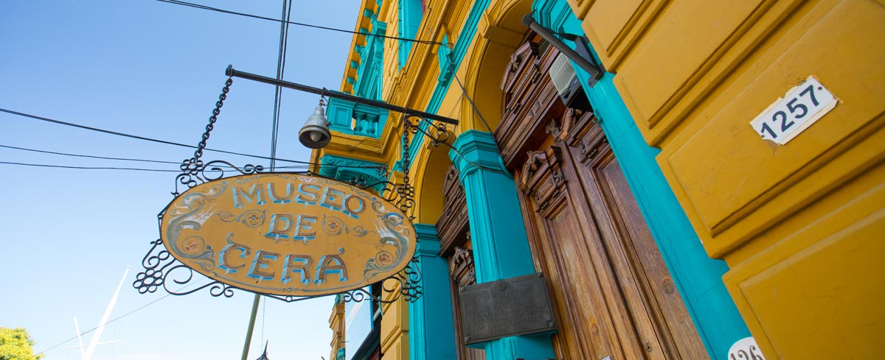
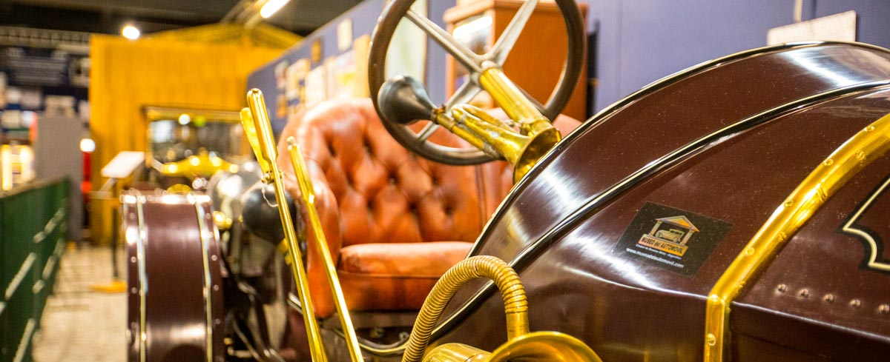

Un amplio abanico de museos con colecciones de arte nacional e internacional se encuentran a disposición del visitante.




¿Ya los recorriste?
La ciudad alberga un amplio abanico de museos de arte nacional e internacional de todas las disciplinas, que abarcan desde antiguas obras emblemáticas hasta piezas contemporáneas y objetos de la nueva era. Se exponen impactantes piezas de artes visuales, audiovisuales, escénicas, literatura y música de todas las épocas.
Una vez al año, las calles de Buenos Aires se visten de fiesta en , con todos los museos abiertos y actividades gratuitas para todos los gustos y edades hasta la madrugada: exposiciones, música, teatro y mucho más. La tradicional noche porteña se potencia y muestra todas sus cartas: se convierte en un espejo de una inagotable fuente de cultura, en el cual vecinos y turistas viven una velada llena de historias y emociones a lo largo de 189 museos y espacios culturales.
Entre ellos se encuentran el Museo Fernández Blanco, arte popular argentino en el Museo José Hernández, el Museo Quinquela Martín con encantadoras obras de este gran artista, y el Palais de Glace, sede del prestigioso Salón Nacional de Artes Visuales.
El Ministerio de Cultura de la Ciudad reúne a 11 museos que albergan, cuidan y difunden un nutrido patrimonio cultural y artístico público, como lo son el Museo Moderno, Museo de arte Hispanoamericano Fernández Blanco, Museo de arte español Enrique Larreta, entre otros. Los museos son espacios disfrutables para vecinos y turistas de todas las edades. Exhiben colecciones patrimoniales permanentes y muestras temporales con nuevos formatos.
El Museo de Arte Latinoamericano de Buenos Aires
El MALBA cobija la colección de arte de la Fundación Costantini, con obras de grandes artistas latinoamericanos del siglo XX como Frida Kahlo, Roberto Matta, Diego Rivera, Antonio Berni, Tarsila do Amaral y Wilfredo Lam.
El Museo Nacional de Bellas Artes
El MNBA es uno de los más importantes de América Latina, por su exponencial arquitectura y el valor de su colección permanente. Exhibe obras de figuras de la talla de El Greco, Goya, Picasso, Rembrandt, Rodin, Cándido López, Prilidiano Pueyrredón y Fernando Fader.
El Museo Moderno
El Museo Moderno resguarda una inmensa producción de arte contemporáneo desde la década de 1940 hasta el siglo XXI, e importantes obras de autores internacionales como Salvador Dalí, Pablo Picasso, Joan Miró y Henri Matisse.